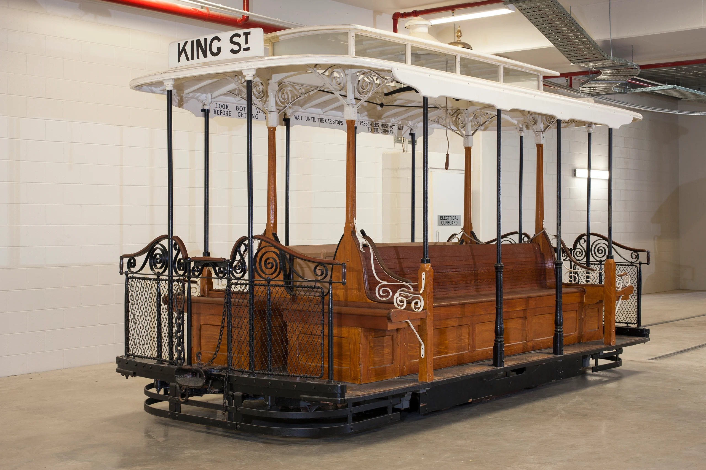

← Rail
1879
Baldwin Steam Tram
Steam tram, full size, tram motor No. 1A, metal / timber, made by Burnham, Parry and Williams & Co, Baldwin Locomotive Works, Philadelphia, United States of America, 1879

1880
Electric Tram, George Street
Glass plate negative, full plate, 'Electric Tram, George Street, David Jones Corner', unattributed studio, Sydney, Australia, c. 1880-1923
1885
Cable Tram Grip Car
Cable tram, grip car, full size, used on cable tram system, Melbourne, Victoria, 1885-1940, restored as a King Street, Sydney, cable tram

1894
Horsedrawn Manly Tram
Tram, full size, horsedrawn, Manly tram, No.199, wood / steel / brass / glass, mady by the Randwick Tramway Workshops of the NSW Government Railways, Sydney, New South Wales, Australia, 1894